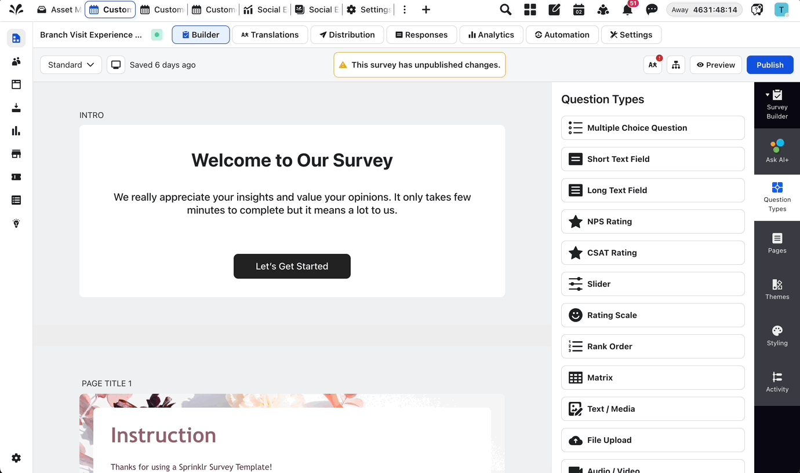

Device Switcher
I was asked to make a small alignment adjustment. I pushed the work toward the larger problem: helping survey creators understand how their layouts would behave across devices while they were still building.

Situation: survey layouts were being designed blind
During my Sprinklr internship, I worked on Customer Feedback Management, a product area for creating, distributing, and analyzing surveys. The Survey Builder made desktop authoring straightforward, but creators had no direct control over how a survey might look on mobile, tablet, or custom device sizes. To validate a layout, they had to leave the builder, open preview, switch devices, inspect the result, return to the builder, and repeat.
My Contribution
I owned the reframing from a small control to a device-aware builder experience
Mapped the friction
I broke down the existing preview loop and showed why creators still lacked confidence even if a new alignment field was added.
Explored least-to-best solutions
I created multiple solution directions so the team could compare a small settings change against a broader in-builder preview model.
Defined the shipped behavior
I shaped the device switcher interaction, alignment states, custom viewport behavior, and constraints needed to keep survey configuration safe.
The product ask was small: add an alignment option so survey media could be adjusted for mobile. My responsibility was to design that control, but I also needed to make sure the solution actually helped creators make better layout decisions.
Add a mobile alignment setting
The expected solution was a small configuration control in the right panel, without changing how creators previewed device layouts.
The control alone would not remove friction
Even with a new setting, creators would still need to leave the builder to understand whether the selected alignment worked.
Make layout behavior visible while authoring
I reframed the task around preview confidence: creators should be able to switch devices and judge layout decisions in context.
Action · Process Arc
From a narrow request to a shipped product direction
Ask received
Add a mobile alignment adjustment to the existing survey builder controls.
Flow audited
I mapped the back-and-forth between builder settings and separate preview screens.
Options framed
I compared a least-change setting, a device toggle, and a responsive authoring model.
Prototype shaped
I connected device switching with alignment controls and custom viewport behavior.
Best shipped
The strongest version moved forward as the shipped direction.
Action · Journey Audit
I mapped the preview loop that made every device decision slower
Leave builder
I identified that the creator had to stop authoring before they could check the layout.
Go to preview
The device experience lived on a separate surface, away from the configuration controls.
Switch device
The creator then had to change the preview mode to see mobile, tablet, or custom behavior.
Map it back
Any issue had to be mentally translated back into a setting in the builder.
Return and iterate
I used this loop to show why an isolated alignment field would still feel incomplete.
Action · Design Insights
Three principles guided the solution
Creators needed layout confidence, not just another setting
The main gap was not only control. It was the inability to see whether a layout decision worked across device sizes while authoring.
Preview belonged closer to the decision point
If users had to leave the builder to validate every device state, the alignment feature would still create a slow trial-and-error workflow.
Device switching could not mutate the survey
The switcher needed to behave like a preview lens: useful for authoring, but safe for question logic, saved configuration, and respondent experience.
The shift was from “where should this media align?” to “how can creators confidently design for every device without leaving the builder?”
Action · Reframing
I turned the ask from a field into an authoring mode
Add mobile alignment controls in the right panel
I started with the smallest version of the request: rename the current control to Web Alignment and add Mobile Alignment below it with top, between title and answer, and bottom placement options.
Add a device switcher in the builder top menu
I proposed a device switcher so creators could move between Web, Mobile, Tablet, and Custom views in the builder, making the alignment decision visible immediately.
Make responsive preview part of authoring
I framed the best version as a scalable preview model: the canvas should resize by device without mutating survey configuration or respondent-facing logic.
Action · Interaction Model
I prototyped how device switching and alignment would work together
Builder top menu
Web alignment
Device preview switcher
I designed the switcher as a builder-level control: changing the device should resize the survey canvas and reveal the relevant alignment options without sending creators to a separate preview flow.
prime
prime
How should this product delivery experience be shown to respondents?
I presented multiple paths from least to best, so the team could compare implementation effort against the amount of friction removed for creators.
Add mobile alignment in the right bar
This solved the requested control gap, but it did not solve the bigger visibility problem because creators still had to preview elsewhere.
Action · Product Constraints
I defined what the shipped experience had to protect
The device toggle needed to be visible in the builder top menu across live, draft, template, and AI+ Builder surveys.
Web, Mobile, Tablet, and Custom modes needed to resize the canvas correctly and re-render survey components responsively.
Custom width and height inputs needed validation limits for advanced device and kiosk-style preview scenarios.
Switching views could not change survey configuration, question logic, or saved respondent-facing behavior.
Web Alignment and Mobile Alignment needed to persist through save, clone, duplicate, sandbox, and porting workflows.
The new controls needed to follow the same permissions already applied to the existing alignment switcher.
Result
The strongest version was shipped
Moved beyond the original ask
The work evolved from a small alignment setting into a shipped device-switching experience that made layout behavior visible inside the builder.
Reduced authoring friction qualitatively
Creators no longer had to rely only on a separate preview flow to reason about web, mobile, tablet, and custom survey layouts while making changes.
What I learned
I learned to treat a small feature request as a signal. The useful design move was not just adding a setting, but finding the workflow friction behind it and proposing a solution that still fit product constraints.